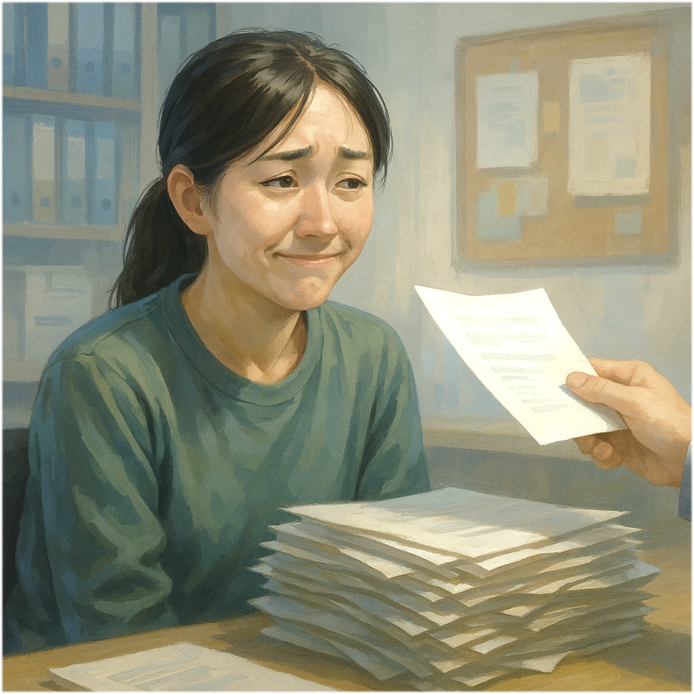
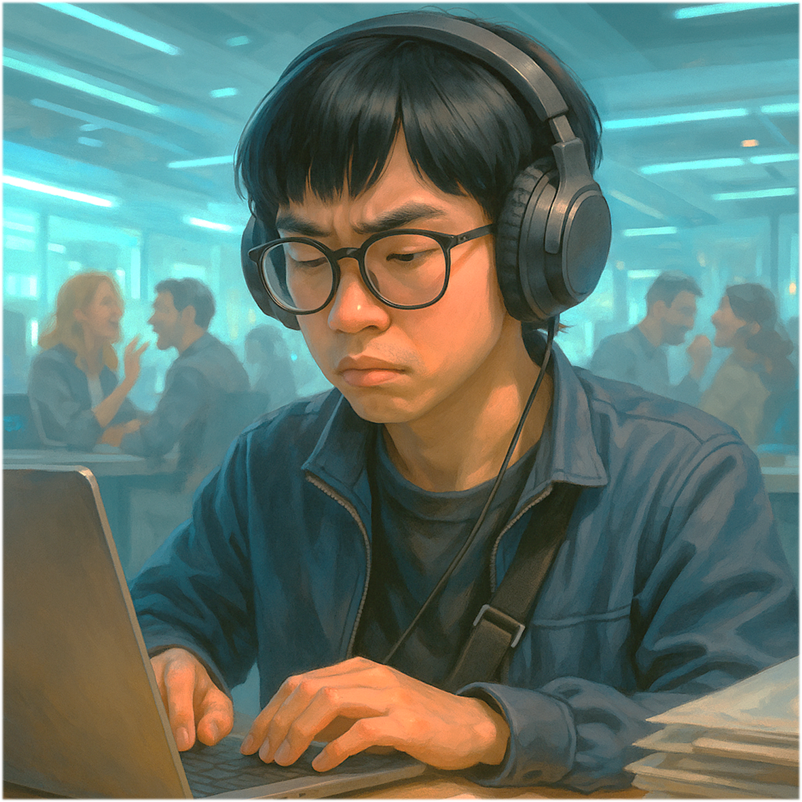

Illustration - 裘萌

Gender
♀️ - 女生
👥 - 雙重身份（可切換型態）
Goal
讓好煩的學長幫你畢業
Ability
# 學長好煩 -
妳發表來自♂傳出的論文時，發動今晚加班，然後跟首蒙元說學長又要叫妳做事了 。
## 會進球喔！ -
這次學長好煩不找首蒙元了，從牌庫獲得四張手牌，分給學長兩張。
Illustration - 首蒙元

Gender
♂️ - 男生
👥 - 雙重身份（可切換型態）
Goal
無
Ability
# 隔壁好吵 -
在你的回合，有研究生採取行動，從牌庫獲得一張手牌，然後去找裘萌抱怨一番。
## 抓到你囉！ -
有研究生被你聆聽書報討論而抽牌或棄牌時，立刻公開他的研究題目，並且獲得他的手牌兩張。
Trivia
裘萌 & 首蒙元，是一對總是形影不離的實驗室 Couple。
儘管身邊的人早已將他們視為「一起出現」的存在，但其實他們加入 Lab 的時間不同，性格也南轅北轍，各自有著不為人知的經歷與煩惱。
裘萌，總是受到格外的照顧與關心。但她並不覺得這是什麼好事。
就像家長望子成龍、望女成鳳，把最好的資源傾注在孩子身上，卻從未真正問過孩子想要什麼。
在別人眼裡，那是支持與愛護；在她心中，卻是壓力與期待的包袱。
以為是在幫她，其實一步步把她推遠。
而首蒙元，則是個情緒外顯、容易浮躁的小年輕。
有一次晚餐過後，隔壁實驗室嘻笑怒罵，整晚笑聲不絕。
當歡聲散去，首蒙元像是終於忍不住似地，向裘萌傾瀉出積壓已久的不滿與憤怒。全然不知，某處角落正有著什麼側耳旁聽…
還有一次，他在隔壁實驗室桌子底下發現了某樣奇怪的東西，就像一條循著血味而來的獵手，不放過任何黑暗中潛伏的心跳。
他們一起走過實驗室的日與夜，一個受期待所困，一個在吵鬧中掙扎。
#AIoT #Master #Year112
Relationship